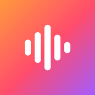

ActaPolítica de privacidad
Vigente desde el 14 de octubre de 2026
1. Quién es responsable
Acta es una aplicación desarrollada por Mario Pinto, en Chile. Para cualquier consulta sobre privacidad escribe a mariopintodg2023@gmail.com.
2. Qué datos maneja la app
| Dato | Para qué | Dónde queda |
|---|---|---|
| Audio de reuniones y clases que grabas o importas | Transcribirlo y crear el acta | En tu teléfono. Se envía a OpenAI solo para transcribirlo. |
| Transcripciones, actas, tareas, apuntes y tarjetas | Mostrarte tus reuniones y clases | En tu teléfono. El texto se envía a Anthropic solo para crear el acta o responder tus preguntas. |
| Fotos que tomas durante una reunión | Adjuntarlas al acta | Solo en tu teléfono. No se envían a ningún servicio. |
| Claves de servicio de OpenAI y Anthropic | Usar esos servicios con tu propia cuenta | Solo en tu teléfono. |
| Nombre, marca, logo, firma, vocabulario y ajustes | Personalizar tus actas e informes | Solo en tu teléfono. |
Acta no recopila tu ubicación, tus contactos, identificadores publicitarios ni datos de uso. No tiene publicidad ni herramientas de analítica.
3. Permisos
- Micrófono: para grabar cuando tú tocas el botón de grabar. Acta nunca graba por su cuenta.
- Cámara o galería: solo cuando eliges tomar o adjuntar una foto.
- Face ID o huella: opcional, para bloquear la app. La verificación la hace tu teléfono; Acta no recibe tu huella ni tu rostro.
4. Servicios de terceros
Acta se conecta directamente desde tu teléfono a estos servicios, con las claves que tú ingresas y bajo tus propias cuentas:
- OpenAI, para transcribir el audio: política de privacidad de OpenAI.
- Anthropic (Claude), para crear el acta y responder preguntas: política de privacidad de Anthropic.
Según sus condiciones para uso por API, estos proveedores no usan esos datos para entrenar sus modelos por defecto. Acta no envía datos a ningún otro destino.
5. Grabar a otras personas
Eres responsable de avisar y pedir permiso a las personas que grabas, como exige la Ley 19.628 y su actualización por la Ley 21.719 en Chile. Acta incluye un aviso de grabación listo para leer o enviar.
6. Cuánto tiempo se guardan y cómo borrarlos
Tus datos quedan en tu teléfono hasta que tú los borras. Puedes eliminar una reunión desde su pantalla o borrar todo desde Ajustes → Almacenamiento → Borrar todo. Desinstalar la app también borra sus datos. Lo que se envió a OpenAI o Anthropic se rige por las políticas de esas empresas y tus ajustes en sus cuentas.
7. Seguridad
Las conexiones con OpenAI y Anthropic van cifradas (HTTPS). Puedes activar el bloqueo con Face ID, huella o PIN para que nadie abra tus reuniones si toma tu teléfono.
8. Menores de edad
Acta no está dirigida a menores de 13 años y no recopila datos de ellos de forma intencional.
9. Tus derechos
Como Acta no guarda tus datos en servidores propios, todo está bajo tu control en tu teléfono. Si tienes dudas sobre el acceso, la rectificación o la eliminación de tus datos, escríbenos al correo indicado arriba.
10. Cambios
Si cambiamos esta política, publicaremos la nueva versión en esta página con su fecha de vigencia.
Acta · Grabadora de reuniones y clases · Chile